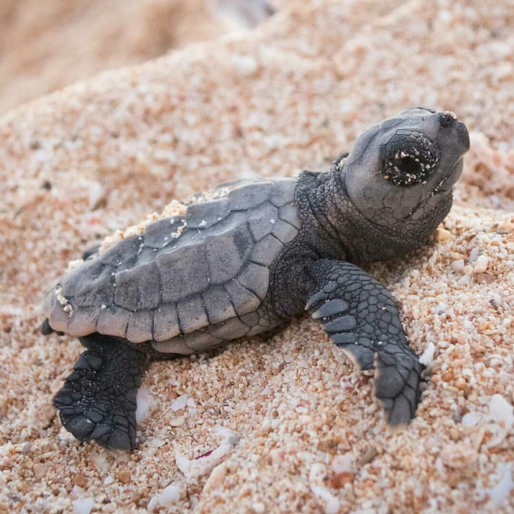
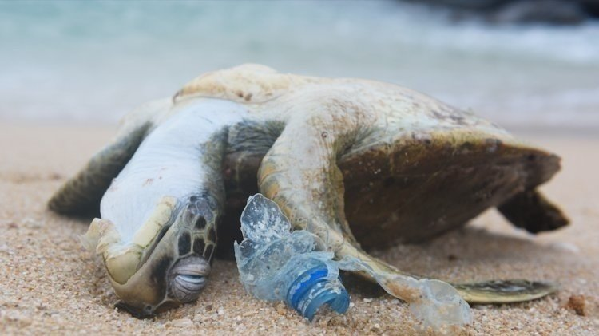
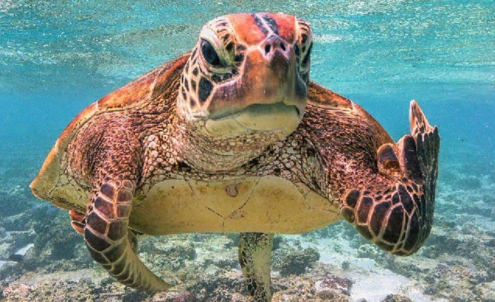

Save the Turtles
Hello, kind visitor.
If you have made it to this page, you probably consider yourself an environmentalist to some extent. Maybe you are not an environmentalist yourself but your friends are, and they are trying to get you to donate to the cause or to at least make you learn some good habits that do not cost much effort to you but can make a big difference long term. Or maybe (more likely) you are Jeff Wald, my Web Design professor this semester, in which case I would suggest you give me full credit on this project, thank you. Anyway, now that you are in this webpage, clean your computer/phone screen and read carefully, for in this webpage I am about to drop some knowledge and I would not like to type all these words for nothing.
There are a variety of threats to turtles and sea life in general, but perhaps our plastic emissions are the most relevant issue at the moment. It is not a secret that humans have been basically treating the oceans as our dumpster for many years. For those who do not know the extent of the problem, there is a "plastic island" located between Hawaii and California that is already three times the size of France. Not only this is a threat to the life of the turtle, thousands of other species are being affected by this problem. These creatures think that these plastics are food and often times they choke on utensiles like straws or bottles to death. Although it has been a challenge lately to reduce the usage of plastics due to the COVID-19 pandemic, and in fact masks have become an issue that can potentially affect this situation negatively, there are still some things that, even in these tough times, can be done to reduce our negative impact. Recycling and using only the plastics that we absolutely need can be a game changer in the short and long term. Actions like buying metal straws that can be reused, or not using any at all, are saving lives. So please, participate in saving lives. Help us save the turtles. Here is a picture for you if you do not. (Obviously a joke, but in all seriousness we ask for your cooperation)